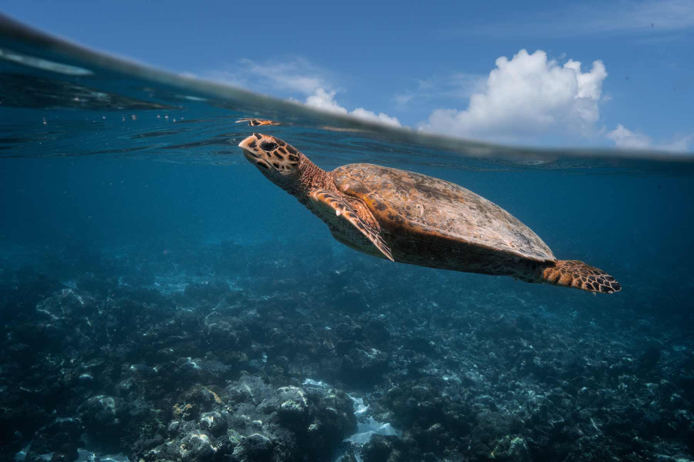

The Olive Ridley Turtle
Olive Ridley turtles are the most common turtle species found in Sri Lanka. They have a wide distribution and visit Sri Lankan shores for nesting. They are named for their olive-green carapace and are known for their synchronized nesting behavior, called arribadas, where large numbers of females come ashore to lay eggs simultaneously.
Located in the southern part of Sri Lanka, Rekawa Beach is a well-known nesting site for Olive Ridley turtles.
The Green Turtle
Green turtles are also commonly found in Sri Lanka. They are named for their green fat and cartilage and have a large and sturdy body. Green turtles are herbivores, feeding primarily on seagrass and algae. They visit Sri Lankan beaches for nesting, and their nesting season typically overlaps with the nesting season of Olive Ridley turtles.
Situated along the southwestern coast of Sri Lanka, Kosgoda Beach is known for its turtle conservation projects. The beach is a nesting site for green turtles, and visitors can learn about turtle conservation efforts and witness hatchlings being released into the sea.
The Hawksbill Turtle

Hawksbill turtles are known for their unique pointed beak and overlapping scutes on their carapace. They are critically endangered and face significant threats, including habitat loss and illegal trade of their beautiful shell. Sri Lanka serves as an important nesting site for Hawksbill turtles, and their eggs are often relocated to protected hatcheries.
Pigeon Island National Park, located off the coast of Nilaveli near Trincomalee, is a protected marine reserve and a nesting site for Hawksbill turtles. The island and its surrounding waters provide suitable conditions for turtle nesting, and visitors can witness these turtles in their natural habitat while snorkeling or diving.
The Loggerhead Turtle
Loggerhead turtles are less common but still encountered in Sri Lankan waters. They are named for their large head and powerful jaws. Loggerheads are known to have a wider diet, feeding on various marine organisms, including crustaceans, mollusks, and jellyfish. They visit Sri Lanka for nesting, and their nesting behavior is characterized by fewer numbers compared to Olive Ridley and Green turtles.
Pottuvil Point, located in the Ampara District, is a site where Loggerhead turtles have been known to nest. This area is part of the Eastern Province and is renowned for its beautiful beaches and diverse marine life.
The Leatherback Turtle

Leatherback turtles are the largest of all turtle species and are known for their distinctive leathery carapace instead of a hard shell. They are highly migratory and have a global distribution. While they are less commonly seen nesting on Sri Lankan shores compared to other turtle species, occasional nesting events have been recorded.
Kosgoda, located in the southwestern coastal region of Sri Lanka, is another area where leatherback turtles occasionally nest. The Kosgoda Turtle Conservation Project conducts conservation activities and raises awareness about turtle conservation among local communities and tourists.